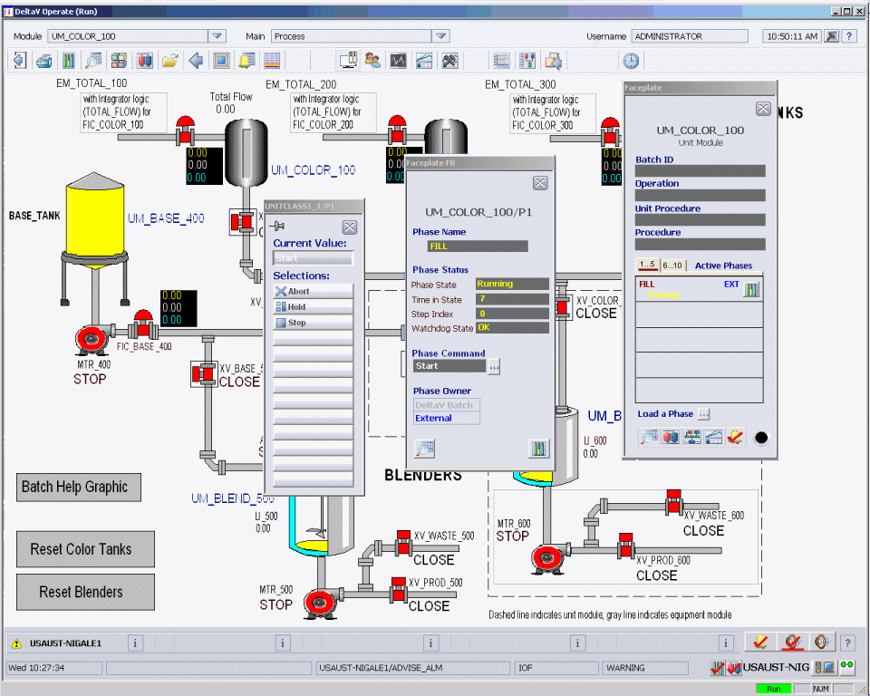

Start and test the FILL phase
-
Click Start on the command list to send a Start command to the phase.

The inlet valve on the Process graphic changes to open and the tank data link shows the tank filling.
The tank will fill to approximately 100 gallons, the amount specified by the batch input parameter FILL_AMOUNT in the FILL phase.
- Click the FILL_AMOUNT parameter on the Batch picture and change the value to 75 in the Data Entry box.